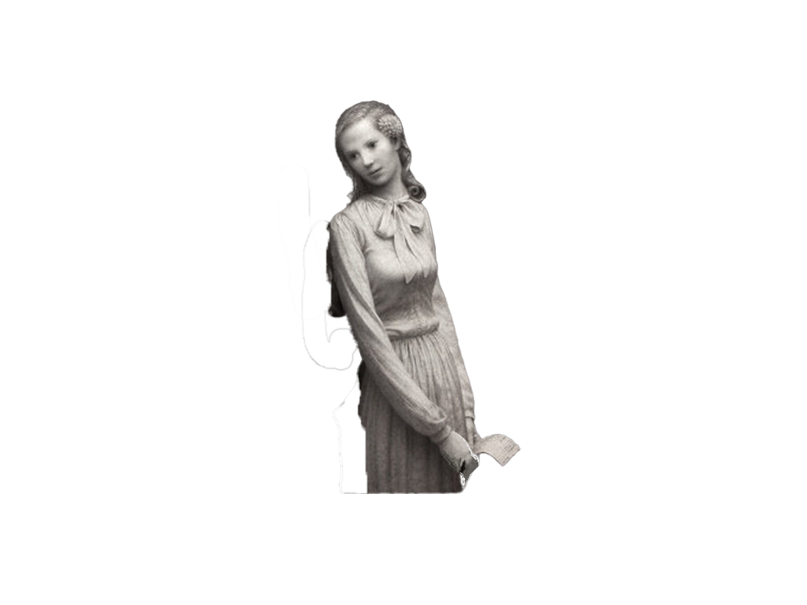
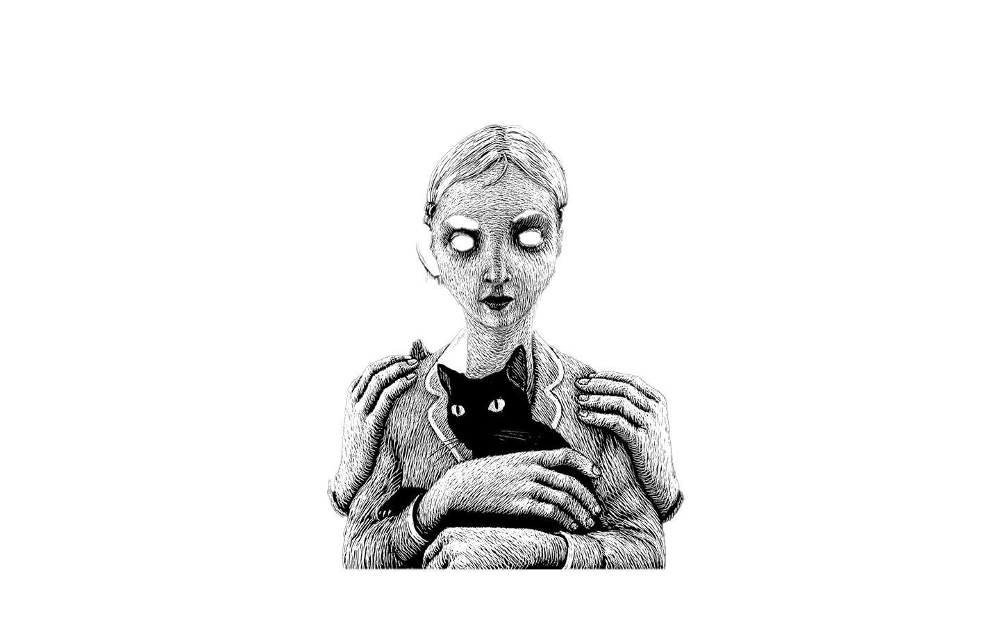
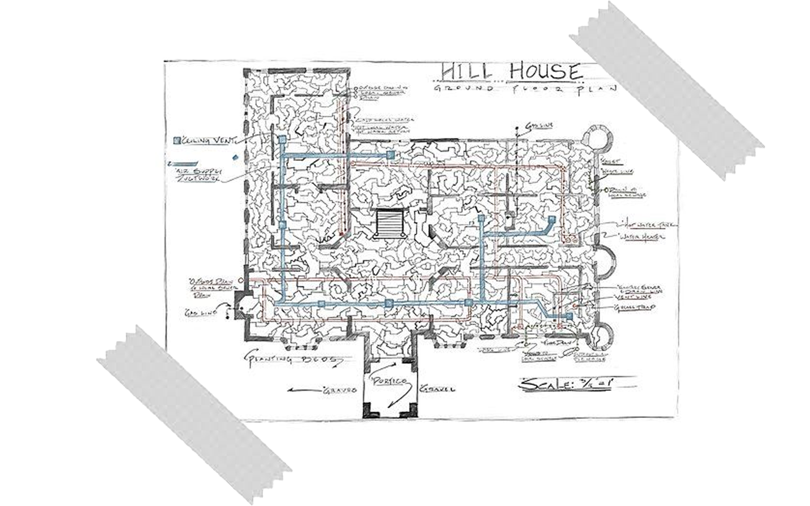
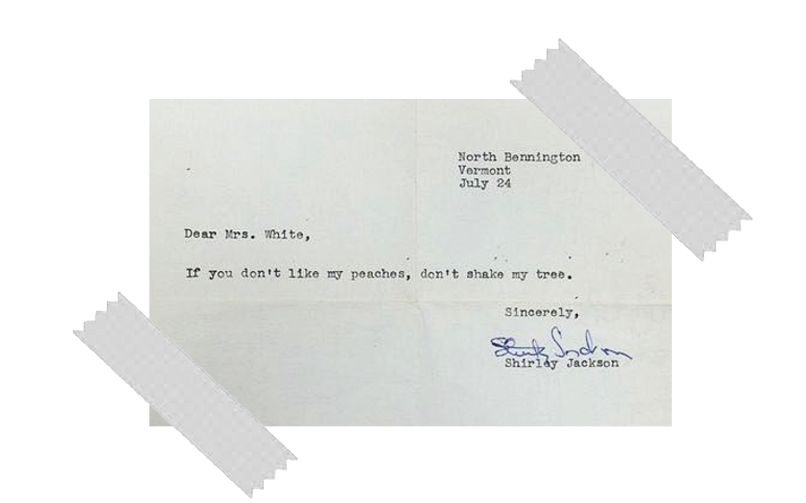
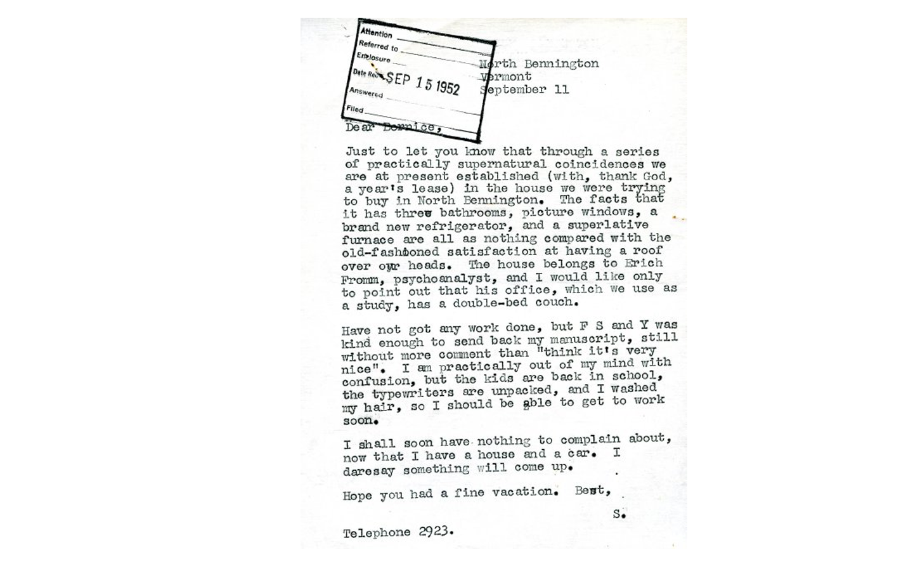

The Hill House Archive
By: Arianna Cuevas-Galarza
"No live organism can continue to exist sanely under conditions of absolute reality."
-Shirley Jackson
Shirley Jackson remains one of the most prolific horror writers of the 20th century, inspiring generations of modern horror authors, such as Stephen King and Neil Gaiman. Her work transforms the familiar architecture of the home into something deeply uncanny. This immersive digital archive derives narrative fragments, architectural imagery, and recovered documents that recreate the dreadful atmosphere of the haunted home that Jackson seeks to invoke. This archive references one of her most famous works repeatedly (a.k.a. The Haunting of Hill House), as well as letters that she herself wrote while she was alive. This archive explores the central question that is present in many of Jackson’s works: How can a seemingly familiar and comforting place, like a house, become horrific under the right circumstances?





